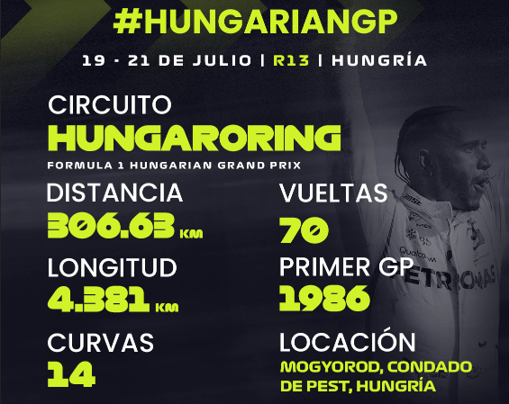

Noticias de Formula 1
Lo ultimo en novedades de Formula 1

Gran premio de hungria. Enterate de lo sucedido este fin de semana.
El piloto de Red Bull, Checo Pérez, quedó fuera de la clasificación del Gran Premio de Hungría al chocar durante la primera tanda, por lo que saldrá el domingo desde la décimo quinta sexta. El clima en el Hungaroring se convirtió en un factor importante durante las actividades de este sábado, ya que durante la calificación la presencia de lluvia y el clima frío fueron factores importantes.
Hungarian Grand Prix
Daily reminder that you need a monthly subscription to gain al access.
Segunda pole para el britanico de McClaren
Lando Norris ha conseguido la 'pole position' en el Gran Premio de Hungría, la tercera de su vida y la segunda de 2024 tras la de Barcelona, para convertirse en el gran favorito a la victoria en la carrera del domingo (15.00 horas). El inglés que viene de desperdiciar varias ocasiones de derrotar a Max Verstappen, no ha tenido rival en la calificación y cuenta con todo a su favor para lograr el triunfo y acercarse en el Mundial de pilotos, donde camina a 84 puntos del holandés. Norris basó el mejor tiempo en el primer intento, con un giro brutal que ya nadie pudo batir. Oscar Piastri sí pudo rebasar a Verstappen, copando una primera línea papaya que apuntala las posibilidades del británico para la victoria.
Red Bull en problemas?
Los problemas de Red Bull en el Gran Premio de Mónaco de Fórmula 1 han puesto de manifiesto inconvenientes subyacentes del RB20 en circuitos con bordillos y baches.
Team principal Christian Horner
"Tricky conditions in qualifying made it a mixed session for us. Max did well to take P3, but it was a great shame to lose Checo in Q1.There hasn’t been a winner from pole position since 2020 here, so all is still to play for tomorrow!"
Full interview